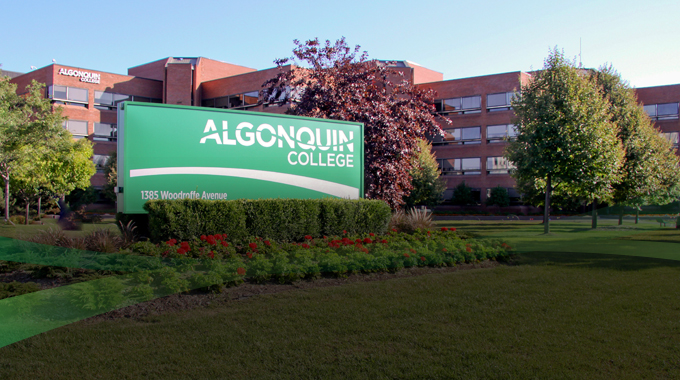

👋 Hi! I'm Marina.

A Computer Programming graduate with professional experience spanning government, healthcare, and IT environments, I bring a unique blend of technical and operational expertise. From supporting web services in secure government systems to working in fast-paced healthcare settings, I’ve developed a strong ability to adapt, solve problems, and communicate effectively across teams. I enjoy working through a variety of challenges, always with a focus on accuracy, efficiency, and client-centered outcomes.
About Me
Born and raised in Ottawa, Ontario, I bring experience across diverse professional environments. From leading as a retail supervisor to working in healthcare as a nurse, and later transitioning into X-Ray technology, I’ve built a versatile skill set and a proven ability to adapt, learn quickly, and eagerly tackle new challenges. Seeing how technology can impact patient care sparked my curiosity and led me to pursue Computer Programming at Algonquin College, where I built a solid foundation in IT skills and problem-solving. This path opened the door to a year-long co-op with the Government of Canada, gaining hands-on experience in a secure Web Services team, and more recently a casual contract with Indigenous Services Canada, where I honed administrative and data entry skills. These experiences have helped me build strong interpersonal skills, become a reliable team player, and thrive in any environment.
College

I am a recent graduate of Algonquin College, where I completed my Computer Programming diploma in 2025. As a three-time alumnus of Algonquin College, I can confidently say that Algonquin offers plenty of opportunities for both personal and professional growth. Most notably, the college's co-op placements have been instrumental in facilitating real-world learning experiences, fostering practical skills, and ensuring career preparedness.
Hobbies
My range of hobbies reflects my curiosity and adventurous nature. I enjoy exploring new destinations, both locally and internationally, having travelled to:
- Iceland
- London, England
- Paris, France
- Barcelona, Spain
- various locations in Mexico
- and multiple locations across Canada
Creativity is important to me, whether through photography, painting, or other artistic pursuits. I also love movies, video games, board games, live music and festivals, outdoor adventures like camping and hiking, and spending meaningful time with family and friends.
Contact Info
- Email: marinapin25@gmail.com
- Cell: 613-293-7451